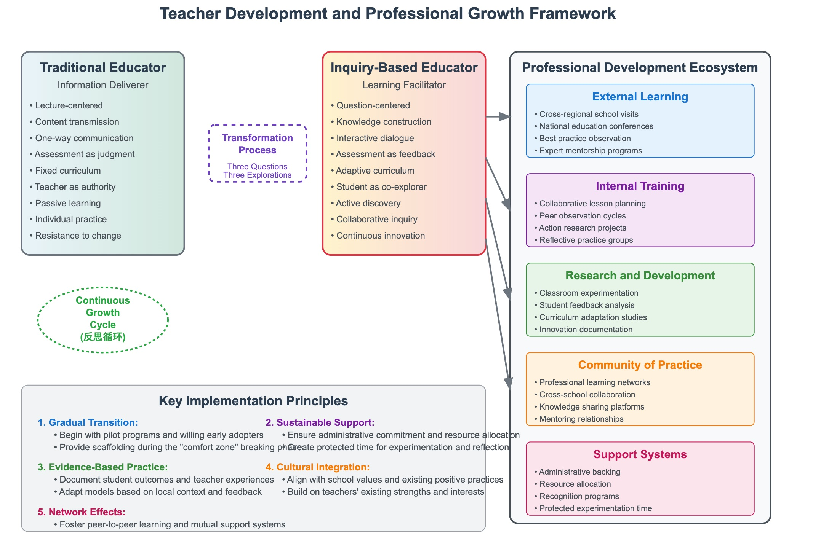

7 Teacher Development and Professional Growth
7.1 Introduction
The transformation from traditional pedagogical approaches to inquiry-based learning represents one of the most significant paradigm shifts in modern education. At the heart of this transformation lies the fundamental reconceptualization of the teacher’s role—from sage on the stage to guide on the side, from information deliverer to learning facilitator. This chapter examines the critical processes, strategies, and frameworks necessary to support educators through this professional metamorphosis.
The Chinese educational reform movements documented in inquiry-based teaching initiatives reveal that successful curriculum transformation depends not merely on administrative mandate or structural reorganization, but on the deep professional development of individual educators. As noted in the strategic frameworks discussed in Chapter 3, sustainable change requires teachers to develop new competencies, adopt different mindsets, and master entirely new pedagogical approaches while maintaining their effectiveness in supporting student learning.
7.2 The Paradigmatic Shift in Educator Roles
7.2.1 From Information Transmission to Facilitation
Traditional educational models position teachers as the primary source of knowledge, responsible for transmitting information to passive recipients. This transmission model, while efficient for covering curriculum content, often fails to develop the critical thinking and problem-solving capabilities that inquiry-based learning seeks to cultivate. The shift to facilitation requires teachers to master a fundamentally different set of skills.
In the facilitation model, teachers become architects of learning experiences rather than deliverers of content. They must learn to ask probing questions rather than provide immediate answers, to design learning environments that encourage exploration, and to support students through the often uncomfortable process of grappling with uncertainty. This transformation requires what educational philosopher John Dewey termed “reflective thinking”—the ability to suspend judgment while exploring multiple perspectives and possibilities.
The inquiry-based approach documented in successful reform implementations demonstrates that effective facilitators must develop sophisticated understanding of how learning occurs. They must recognize that knowledge construction is an active process requiring student engagement with authentic problems and real-world contexts. This understanding fundamentally alters how teachers plan lessons, interact with students, and assess learning outcomes.
7.2.2 Developing Pedagogical Content Knowledge
Effective inquiry-based teaching requires more than general facilitation skills. Teachers must develop what Lee Shulman identified as pedagogical content knowledge (PCK)—the intersection of content expertise and pedagogical understanding that enables educators to make subject matter accessible and engaging for learners. In inquiry-based contexts, PCK becomes even more complex because teachers must understand not only what students should learn, but how to guide them through the process of discovery.
This specialized knowledge includes understanding common misconceptions within specific domains, recognizing productive entry points for student inquiry, and knowing when to intervene in student exploration versus when to allow productive struggle. Teachers must learn to read the subtle cues that indicate when students are making productive progress through confusion versus when they need additional scaffolding or redirection.
The development of PCK for inquiry-based teaching often requires sustained engagement with both subject matter and pedagogical research. Teachers benefit from opportunities to examine their own content knowledge through the lens of student learning, identifying areas where their understanding may be too automatic or expert-like to effectively support novice learners.
7.3 Professional Development Frameworks
7.3.1 External Learning Opportunities
The regional reform experiences in Jilin Province demonstrate the critical importance of external learning in teacher development. When educators have opportunities to observe inquiry-based teaching in action, participate in professional learning communities with peers from other institutions, and engage with educational researchers and reformers, they develop both practical skills and theoretical understanding necessary for transformation.
Effective external learning opportunities share several characteristics. They provide teachers with concrete examples of inquiry-based practices in contexts similar to their own. They offer opportunities for active participation rather than passive observation. They connect classroom practices to broader educational theories and research findings. Most importantly, they create space for reflection and meaning-making, allowing teachers to process new information and consider its implications for their own practice.
Study tours and observation visits, when properly structured, serve as powerful catalysts for professional growth. However, the simple act of observing effective practice is insufficient for transformation. Teachers need guided reflection protocols that help them analyze what they observe, connect new practices to their existing knowledge, and develop implementation plans appropriate for their specific contexts.
Professional conferences and workshops can provide valuable exposure to new ideas and methodologies, but their impact depends heavily on follow-up support and implementation assistance. One-time professional development events rarely produce lasting change without sustained support systems and opportunities for continued learning and refinement.

7.3.2 Internal Training Programs
While external learning provides inspiration and exposure to new possibilities, internal training programs offer the sustained support necessary for deep professional transformation. Effective internal programs are characterized by their responsiveness to local contexts, their integration with ongoing school improvement efforts, and their attention to the gradual nature of meaningful change.
Successful internal training programs often employ a coaching model that pairs experienced inquiry-based practitioners with teachers new to the approach. This mentoring relationship provides ongoing support, immediate feedback, and gradual release of responsibility as new practitioners develop confidence and competence. The coaching model recognizes that learning to teach differently is a complex process that unfolds over time through repeated practice and reflection.
Professional learning communities within schools create opportunities for collaborative learning and shared problem-solving. When teachers regularly engage in examining student work, analyzing teaching practices, and discussing pedagogical challenges, they develop the habits of mind necessary for continuous improvement. These communities become laboratories for experimentation and refinement of inquiry-based approaches.
Action research projects allow teachers to systematically investigate their own practice while implementing new approaches. By collecting data on student learning, reflecting on teaching decisions, and adjusting practices based on evidence, teachers develop both practical skills and research mindsets that support ongoing professional growth.
7.4 Overcoming Resistance and Building Confidence
7.4.1 Addressing Pedagogical Anxiety
The transition to inquiry-based teaching often generates significant anxiety among educators who have achieved success with traditional approaches. This anxiety is understandable and rational—teachers are being asked to abandon familiar practices that have served them well in favor of approaches that initially feel uncertain and risky. Effective professional development programs acknowledge this anxiety and provide structured support for working through it.
Common sources of anxiety include fear of losing classroom control when students become more active participants in their learning, concern about covering required curriculum content when inquiry processes take longer than direct instruction, and worry about maintaining academic standards when assessment practices must change to align with new learning goals. These concerns reflect legitimate challenges that require thoughtful response rather than dismissal.
Building confidence requires providing teachers with safe spaces to experiment with new approaches, opportunities to observe successful implementation by peers, and gradual introduction of inquiry-based practices rather than wholesale transformation. Many successful reform efforts begin with small-scale implementations that allow teachers to experience success before expanding their use of inquiry-based approaches.
7.4.2 Creating Supportive Learning Environments
Professional development environments must model the inquiry-based approaches they seek to promote. When teachers experience learning through exploration, questioning, and collaborative problem-solving, they develop both skills and dispositions necessary for implementing similar approaches with their students. This alignment between professional development methodology and desired classroom practices reinforces learning and builds authentic understanding.
Psychological safety becomes paramount in professional development contexts where teachers are asked to take risks and potentially make mistakes as they learn new approaches. Administrators and professional development leaders must create environments where experimentation is encouraged, failures are treated as learning opportunities, and teachers feel supported in their growth rather than evaluated or judged.
Peer collaboration and shared leadership in professional development activities help distribute expertise and create multiple sources of support. When teachers take responsibility for leading aspects of their own professional learning, they develop ownership and investment in the transformation process while building capacity for sustained improvement.
7.5 Sustainable Growth Models
7.5.1 Continuous Learning Cycles
Sustainable professional development recognizes that learning to teach through inquiry is an ongoing process rather than a discrete training event. Effective programs establish cycles of learning that include planning, implementation, reflection, and refinement. These cycles mirror the inquiry processes that teachers are learning to facilitate with their students.
Regular reflection protocols help teachers examine their practice systematically, identify areas for growth, and set goals for continued development. These protocols might include lesson analysis frameworks, student learning assessments, or peer observation systems that provide structured opportunities for examining teaching effectiveness.
Documentation and portfolio development allow teachers to track their growth over time while creating resources for supporting colleagues who are earlier in their transformation journey. When teachers maintain records of their learning, including challenges faced and strategies developed, they contribute to institutional knowledge while reinforcing their own professional development.
7.5.2 Building Internal Capacity
Long-term sustainability requires developing internal capacity for supporting ongoing professional growth. This means identifying and developing teacher leaders who can provide coaching and mentoring for colleagues, creating systems for sharing effective practices within and across schools, and establishing structures for continuous program improvement.
Teacher leadership development involves more than simply identifying effective practitioners. It requires providing potential leaders with skills in adult learning, coaching methodologies, and change management. These teacher leaders must understand not only how to implement inquiry-based teaching effectively but also how to support others through the complex process of professional transformation.
Knowledge management systems help institutions capture and share the wisdom developed through reform implementation. When schools create repositories of effective practices, common challenges and solutions, and resources for supporting implementation, they build organizational capacity for sustained improvement that transcends individual personnel changes.
7.6 Assessment and Evaluation of Professional Growth
7.6.1 Measuring Transformation
Assessing teacher development in inquiry-based approaches requires evaluation frameworks that go beyond traditional measures of teaching effectiveness. While student achievement data remains important, it must be supplemented with measures that capture the complex processes involved in facilitating inquiry-based learning.
Classroom observation protocols must be redesigned to focus on the quality of questioning, the degree of student engagement in authentic problems, and the effectiveness of scaffolding provided during inquiry processes. These observations require trained evaluators who understand inquiry-based teaching and can distinguish between surface-level implementation and deep pedagogical transformation.
Self-assessment tools allow teachers to monitor their own development while building metacognitive awareness of their teaching practices. When teachers regularly reflect on their implementation of inquiry-based approaches, they develop the self-monitoring capabilities necessary for continuous improvement.
7.6.2 Portfolio-Based Documentation
Professional portfolios provide rich documentation of teacher growth over time while creating opportunities for reflective analysis. Effective portfolios include lesson plans, student work samples, reflection essays, and video documentation that demonstrate the evolution of teaching practices and student learning outcomes.
Portfolio development processes should include regular review and analysis sessions where teachers examine their documentation with colleagues or mentors. These collaborative reviews provide opportunities for shared learning while supporting individual growth through structured reflection and feedback.
Digital portfolio platforms can facilitate sharing and collaboration while providing tools for organizing and analyzing professional growth documentation. When teachers can easily access and share their work with colleagues, they contribute to collective learning while receiving support for their individual development.
7.7 Conclusion
The transformation of teachers from information deliverers to learning facilitators represents both the greatest challenge and the most critical success factor in implementing inquiry-based education. This transformation requires comprehensive professional development systems that address both the technical aspects of new pedagogical approaches and the emotional and psychological dimensions of significant professional change.
Successful teacher development programs recognize that meaningful change occurs gradually through sustained support, repeated practice, and continuous reflection. They provide multiple pathways for learning while maintaining focus on the ultimate goal of improved student learning through inquiry-based approaches.
The evidence from regional reform initiatives demonstrates that when teachers receive appropriate support for professional transformation, they can successfully implement inquiry-based approaches that significantly enhance student learning. However, this transformation requires institutional commitment to long-term professional development processes that honor the complexity of changing deeply held beliefs and practices about teaching and learning.
As educational systems continue to evolve in response to changing societal needs and technological possibilities, the capacity to support teacher development will remain a critical determinant of reform success. The frameworks and strategies outlined in this chapter provide roadmaps for supporting educators through the challenging but ultimately rewarding process of professional transformation that inquiry-based education demands.